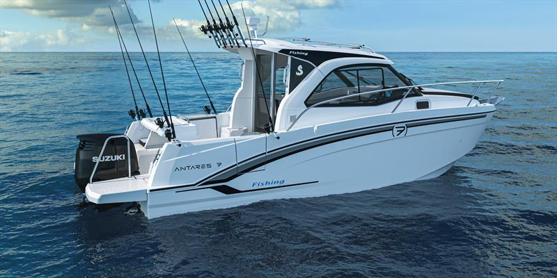

B-Atlas Boat Guide · BENE-ANT-7
Beneteau Antares 7 Cruising / Fishing
From 2018
The Beneteau Antares 7 is a French enclosed-pilothouse outboard cruiser designed for short coastal trips, fishing and weekend use. The Antares range prioritizes visibility, sheltered helm operation and practical cockpit access rather than traditional trawler-speed efficiency.

- Length
- 24.5 ft
- Beam
- 8.17 ft
- Draft
- 2.58 ft
- Hull behaviour
- Planing
- Fuel
- Gasoline
- Propulsion
- Outboard
- Engine configuration
- Single outboard
- Boat family
- Cruiser
- Construction
- Fiberglass
Best for
- Weekend coastal cruising
- Owners wanting enclosed outboard operation
- Fishing and family day use with occasional overnighting
Trade-offs
- Planing-speed operation uses substantially more fuel than displacement cruising
- Outboard installations occupy transom space
- Accommodation and tankage are modest relative to trawler-style cruisers of similar overall length
Known concerns
- No model-specific concern has been promoted to B-Atlas’s evidence threshold. This does not mean the model has no age-, condition- or hull-specific risks.
Inspection focus
- Inspect outboard service history, mounting and steering
- Inspect pilothouse windows, doors and roof penetrations
- Inspect cockpit drainage and transom structure
- Verify tankage, sleeping layout and fitted sanitation equipment
Continue researching
Related boat models
Beneteau Barracuda 8 Sport-Fishing Pilothouse
26.21 ft · Planing
Beneteau Antares 8 Cruising / Fishing
26.42 ft · Planing
Beneteau Barracuda 9 Sport-Fishing Pilothouse
29.86 ft · Planing
Beneteau Antares 9 Series 1 / Series 2
29.92 ft · Planing
Beneteau Antares 11 Coupé
36.58 ft · Planing
Albin 25 Motor Cruiser
25 ft · Displacement
About this record
B-Atlas preserves uncertainty: missing information remains unknown rather than being treated as a negative. Specifications and guidance describe the model record; individual boats can differ by year, equipment, refit and condition.